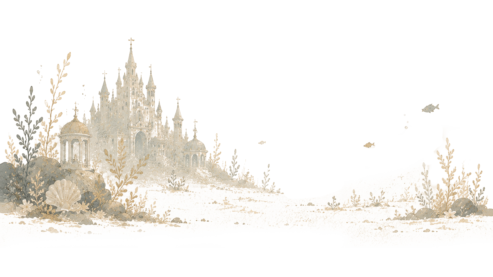

TALE 01
PART 1 ✦ 인어공주
인어공주
"그 막내 공주는 아주 오래전부터 바다 너머를 꿈꾸고 있었다."
플레이어
님의 이야기가 시작됩니다.

▶ 화면을 누르면 다음으로 이동합니다.
ENDING 01
보이지 않은 생일
나만의 엔딩명을 작성할 수 있어요
✦ 완료 ✦
✦ 완료 ✦
PART 1 — END
✦ 완료 ✦
✕
설정
배경음 크기
35%
마우스 클릭음
텍스트 출력 속도
느리게
보통
빠르게